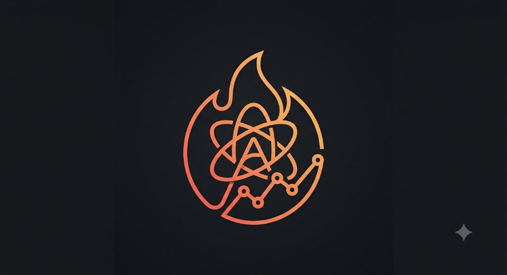

Ignis AtelierFlame in Freefall
Explore 83 real published microgravity combustion experiments from NASA's BASS-II project,
discover what was measured aboard the International Space Station with zero AI extrapolation,
and see exactly where the physical evidence stops.